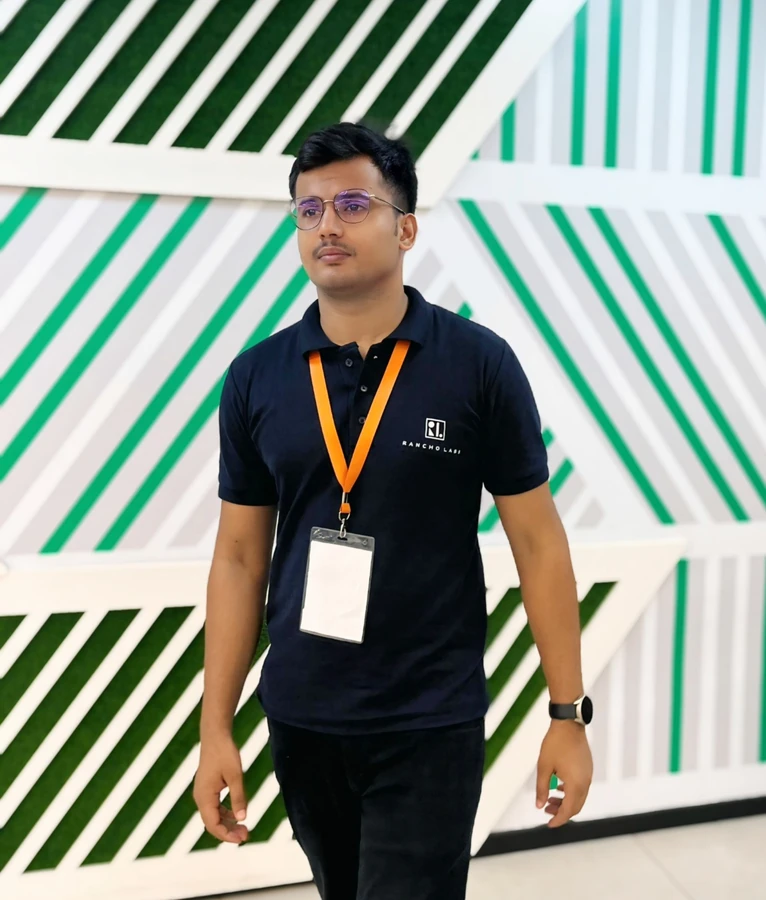
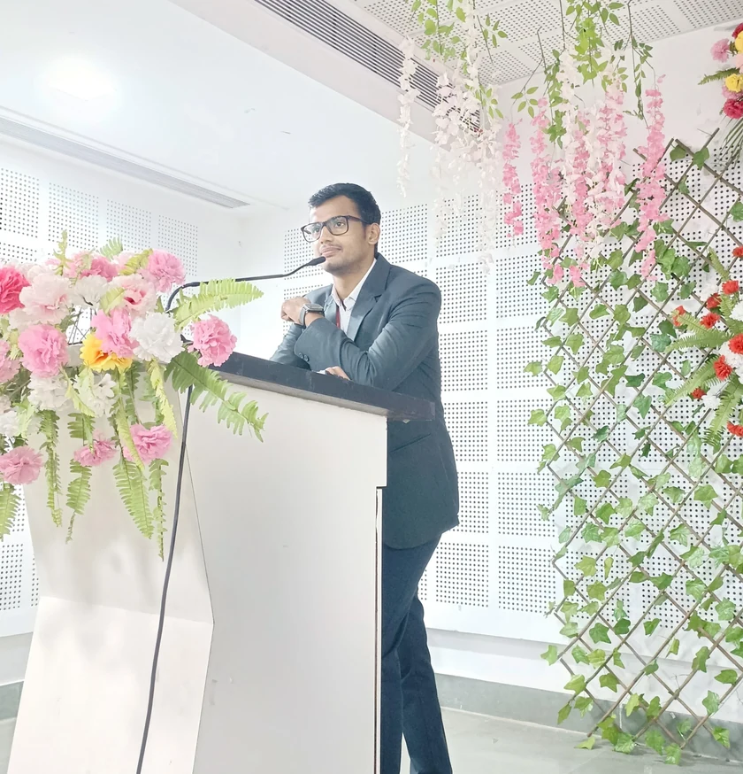

Robotics & STEM Educator and Embedded Systems Developer, connecting classroom learning with real-world technology. I teach students through hands-on Robotics, AI, and IoT projects, and build practical systems including the ESP32-powered school election platform at Panchsheel Public School.

Hi, I'm Md Hifzullah, a Robotics & STEM Educator and Computer Science & Engineering graduate (B.Tech CSE, Sandip University, Bihar, May 2025). I specialize in turning abstract electronics and programming concepts into tangible, working machines that students can wire, code, and test themselves.
Delivering hands-on robotics, embedded systems, and coding instruction to school students across partner institutions—including Panchsheel Public School (PPS). Guiding learners in building real-world hardware prototypes using Arduino, ESP32, ultrasonic & IR sensors, servos, DC motor drivers, and Python/C++ firmware.
Rancho Labs Initiative · Sponsored by the Government of Bihar
Worked under Rancho Labs on a special Bihar Government–sponsored educational mission in Samastipur. Taught and nurtured curiosity among underprivileged government school students by providing early, hands-on exposure to the fundamentals of Robotics, Artificial Intelligence (AI), and Entrepreneurship.

Whether mentoring students at partner schools like Panchsheel Public School (PPS) or building rural STEM curiosity in government schools, my focus is always on building systems that work reliably in the real world.
Includes the two-generation evolution of the Electronic Voting Machine (from the v1.0 Arduino Uno classroom prototype to the v2.0 ESP32 + Python Flask live election system deployed at Panchsheel Public School). Click any project to inspect its hardware BOM, pinout, video demo slot, and source code.
Every honor below is backed by original certificates, university evaluation sheets, and award ceremony photographs. Click View Certificate or View Proof on any card to open the full-resolution interactive lightbox with zoom and rotation controls.
Students learn fastest when they wire physical sensors, debug real hardware issues, and see their code move machines.
Every limitation—like volatile RAM losing votes on battery disconnect in EVM v1.0—is a stepping stone to a better v2.0 architecture.
From premier private schools in Delhi to government schools in Bihar, every curious learner deserves exposure to Robotics and AI.
Combining embedded C++ with Python backends, NVS flash storage, and automated CSV backups so systems perform under real pressure.
Answers about my robotics curriculum delivery, embedded engineering builds, and collaboration opportunities.
Interested in organizing a hands-on Robotics & STEM workshop, collaborating on an embedded IoT system, or discussing an instructional/engineering role? Connect directly via WhatsApp, phone, or email.
Delivers directly to md@hifzullah.in via EmailJS (Titan Inbox)
Final interface · Quick access
A small interactive control deck inspired by the hardware I enjoy building. Hover over a key, use your keyboard, or select a destination.
HIFZULLAH.DEV
LEARN · BUILD · REPEAT
Tip: hover or focus a key to preview its destination.
Curiosity in motion.
Building with code, electronics and ideas. Always exploring what’s next.